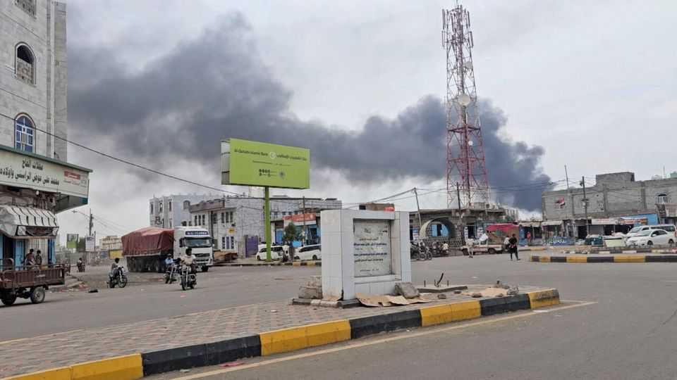

Politics

Aug 13th 2026
Iranian-backed Houthi rebels stepped up their attacks on shipping trying to traverse the Red Sea. The Houthis struck an Egyptian-owned cargo vessel, killing six people, the first deaths from a Houthi assault on shipping since the war with Iran started in February. The Houthis are fighting Saudi Arabia in Yemen and are trying to impose a blockade on Saudi ships; they also attacked a Saudi oil refinery at the port of Jazan. America fired missiles at a vessel in the Gulf of Oman that was heading for an Iranian port. There was little progress towards a peace deal between America and Iran.
Pakistan, Turkey and Saudi Arabia signed a defence co-operation agreement, which was described as similar to NATO’s Article 5, when an attack on one member of the alliance triggers a collective response. The pact builds on an existing accord between Pakistan and Saudi Arabia; Pakistan has deployed fighter jets to Saudi Arabia to defend it from Iranian attacks. The Saudis were keen to stress that the new pact did not represent a Sunni “military axis”, and that other countries could join.
Details emerged of a ploy to thwart an Iranian threat to assassinate Donald Trump. As he was leaving last month’s NATO summit in Turkey, the president was secretly transferred to a military jet that then flew to Britain. The media reported at the time that Mr Trump left Turkey on an older version of Air Force One. He did board that plane, but was then squirrelled out through a side exit into a catering van and onto the waiting jet, out of the view of journalists.
A fire at sofa factory in Riyadh, the Saudi capital, killed at least 16 Bangladeshi workers. Around 3.5m Bangladeshi migrants live and work in Saudi Arabia.
Bashar al-Assad, who was overthrown as Syria’s president in 2024 following a 14-year civil war, was sentenced to death in absentia for killings and torture committed under his regime. Mr Assad and his family live in Russia. Death sentences were also handed down to other regime officials, including Atef Najib, the security chief of Deraa, in southern Syria. Concerns have been raised that the trial was conducted at great speed and without an agreement on its legal framework.
The number of deaths from Ebola in the Democratic Republic of Congo passed 2,060. The WHO said it could be the worst Ebola outbreak ever and has called for a stronger response in Congo to contain the disease, including better early detection and contact follow-up. It pointed to the success of Uganda, which has declared the outbreak of Ebola there to be over (after just 20 confirmed cases and two deaths).
An earthquake of magnitude 7.4 struck Colombia, killing at least 265 people. The quake came three days after Abelardo de la Espriella was sworn in as the country’s new right-wing president. In his inauguration speech Mr de la Espriella reiterated his pledge to crack down on drug gangs and criminal violence.
Zhu Rongji died at the age of 97. Mr Zhu became China’s prime minister in 1998 and pushed for the great reforms that integrated China into the global economy, negotiating its entry into the World Trade Organisation in 2001. Articulate and urbane, he often talked to Western officials and economists about complex policy issues. Observers say China’s leadership today lacks his technical prowess.
The Taiwanese government is proposing to increase defence spending by 16%, according to Taiwan’s official news agency, to counter the increased threat from China. The defence budget will exceed 3% of GDP when it is unveiled on August 20th. America would like Taiwan to spend more.
Thailand’s prime minister, Anutin Charnvirakul, took steps to tighten gun laws, following the mass shooting of six people at a school. The 14-year-old gunman also shot dead two of his grandparents before killing himself. Mr Anutin ordered a halt to the renewal of certain weapon licences and instructed officials to intensify their enforcement of gun-control laws.
Police in Ranchi, the capital of the Indian state of Jharkhand, used tear-gas and water cannon to disperse thousands of young demonstrators who were protesting against the leaking of test papers in civil-service exams. Similar protests have taken place in Delhi recently over a leak of medical test papers, which led to the annulment of nationwide exams.
Russia attacked the Ukrainian city of Zaporizhia, killing at least six people. Russia deployed North Korean ballistic missiles in the bombardment, according to Volodymyr Zelensky. Ukraine, meanwhile, pounded Russia’s Black Sea port of Novorossiysk, hitting warships and grain-export terminals. It also struck oil refineries in the Russian republic of Tatarstan with drones, killing at least 13 people.
America’s Senate passed a long-delayed bill authorising Donald Trump to impose new sanctions on Russian officials, oligarchs, companies and institutions. It also allows him to impose tariffs on big importers of Russian oil and gas. The legislation attracted bipartisan support. It must now clear the House of Representatives. Critics worry that Mr Trump will use his new powers in ways that escalate his trade wars.
Russia’s Supreme Court ruled that Yabloko, the only liberal anti-war party in Russia, could not take part in next month’s elections for parliament. A nationalist party had accused Yabloko of hosting material on its website supportive of the international gay movement, which the court has deemed to be an extremist crusade. Hundreds of mostly young people braved the authorities by protesting against the ban outside the court in Moscow.
Continuing its dismantling of the old regime under Viktor Orban, Hungary’s parliament elected Andras Baka as the country’s president. Mr Baka had been removed as head of the Supreme Court in 2011 for criticising Mr Orban. He now has the difficult task of overseeing the development of a new constitution.
Karoline Leavitt is stepping down as White House press secretary to spend more time with her children. Ms Leavitt was one of the president’s most loyal aides; he said she had done a “phenomenal job”. At the age of 27 she was the youngest person ever to be appointed to the job, but soon settled into a combative relationship with journalists.
Todd Blanche was sworn in as America’s attorney-general, after the Senate voted to confirm him by 50 votes to 49. Two Republicans opposed his nomination. Mr Blanche has been acting attorney-general since April, but his ambition to keep the job ran into opposition. To win approval, he provided written assurances that the Justice Department had rescinded parts of a deal it struck with Mr Trump, including a $1.8bn fund to compensate people claiming to have been targeted by the federal government. The fund was widely seen as benefiting Mr Trump and his allies.
The Democratic establishment breathed a sigh of relief when David Crowley, a moderate, defeated Francesca Hong, a left-winger, in the party’s primary for governor of Wisconsin. Polling had suggested Ms Hong would win the primary handily. Party leaders feared she would lose in November to the Republican nominee. Ms Hong once said that Thanksgiving was a celebration of colonialism.
Millions of people in northern Spain and in Greenland and Iceland enjoyed Europe’s first total eclipse of the sun in 27 years. Home-rental rates rocketed in Spain as umbraphiles from around the world flocked to the area. Other parts of Europe, including Britain, France and Portugal, caught a partial eclipse. The next total eclipse is on August 2nd 2027, which will be visible from southern Spain, north Africa and Saudi Arabia.